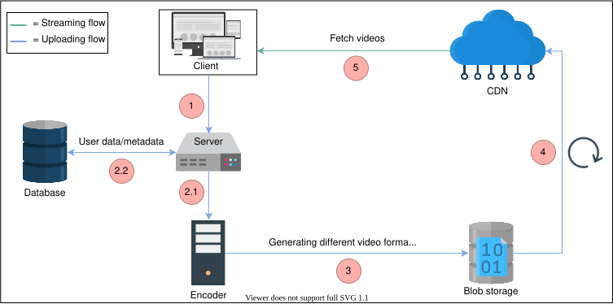
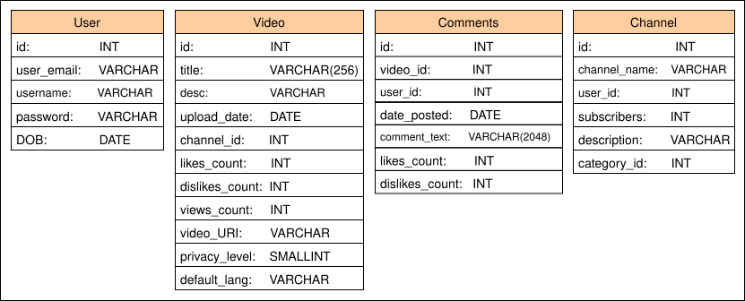
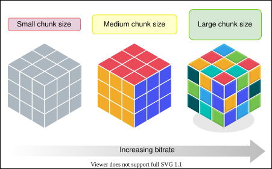
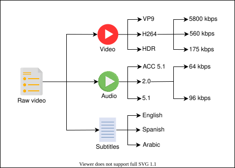
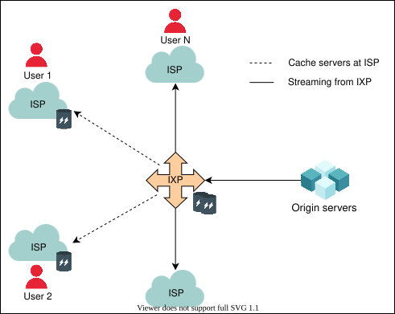
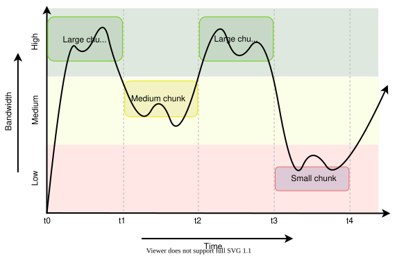

26. Design YouTube
System Design: YouTube
System Design: YouTube
Let's understand the basic details to design the YouTube service.
We'll cover the following
What is YouTube?#
YouTube is a popular video streaming service where users upload, stream, search, comment, share, and like or dislike videos. Large businesses as well as individuals maintain channels where they host their videos. YouTube allows free hosting of video content to be shared with users globally. YouTube is considered a primary source of entertainment, especially among young people, and as of 2022, it is listed as the second-most viewed website after Google by Wikipedia.
YouTube’s popularity#
Some of the reasons why YouTube has gained popularity over the years include the following reasons:
- Simplicity: YouTube has a simple yet powerful interface.
- Rich content: Its simple interface and free hosting has attracted a large number of content creators.
- Continuous improvement: The development team of YouTube has worked relentlessly to meet scalability requirements over time. Additionally, Google acquired YouTube in 2007, which has added to its credibility.
- Source of income: YouTube coined a partnership program where it allowed content creators to earn money with their viral content.
Apart from the above reasons, YouTube also partnered up with well-established market giants like CNN and NBC to set a stronger foothold.
YouTube’s growth#
Let’s look at some interesting statistics about YouTube and its popularity.
Since its inception in February 2005, the number of YouTube users has multiplied. As of now, there are more than 2.5 billion monthly active users of YouTube. Let’s take a look at the chart below to see how YouTube users have increased in the last decade.
YouTube is the second most-streamed website after Netflix. A total of 694,000 hours of video content is streamed on YouTube per minute!
Now that we realize how successful YouTube is, let’s understand how we can design it.
How will we design YouTube?#
We’ve divided the design of YouTube into five lessons:
-
Requirements: This is where we identify the functional and non-functional content uploaded to YouTube per day.
-
Design: In this lesson, we explain how we’ll design the YouTube service. We also briefly explain the API design and database schemas. Lastly, we will also briefly go over how YouTube’s search works.
-
Evaluation: This lesson explains how YouTube is able to fulfill all the requirements through the proposed design. It also looks at how scaling in the future can affect the system and what solutions are required to deal with scaling problems.
-
Reality is more complicated: During this lesson, we’ll explore different techniques that YouTube employs to deliver content effectively to the client and avoid network congestions.
-
Quiz: We reinforce major concepts we learned designing YouTube by considering how we could design Netflix’s system.
Our discussion on the usage of various building blocks in the design will be limited since we’ve already explored them in detail in the building blocks chapter.
Requirements of YouTube's Design
Requirements of YouTube's Design
Understand the requirements and estimation for YouTube's design.
Requirements#
Let’s start with the requirements for designing a system like YouTube.
Functional requirements#
We require that our system is able to perform the following functions:
- Stream videos
- Upload videos
- Search videos according to titles
- Like and dislike videos
- Add comments to videos
- View thumbnails
Non-functional requirements#
It’s important that our system also meets the following requirements:
- High availability: The system should be highly available. High availability requires a good percentage of uptime. Generally, an uptime of 99% and above is considered good.
- Scalability: As the number of users grows, these issues should not become bottlenecks: storage for uploading content, the bandwidth required for simultaneous viewing, and the number of concurrent user requests should not overwhelm our application/web server.
- Good performance: A smooth streaming experience leads to better performance overall.
- Reliability: Content uploaded to the system should not be lost or damaged.
We don’t require strong consistency for YouTube’s design. Consider an example where a creator uploads a video. Not all users subscribed to the creator’s channel should immediately get the notification for uploaded content.
To summarize, the functional requirements are the features and functionalities that the user will get, whereas the non-functional requirements are the expectations in terms of performance from the system.
Based on the requirements, we’ll estimate the required resources and design of our system.
Resource estimation#
Estimation requires the identification of important resources that we’ll need in the system.
Hundreds of minutes of video content get uploaded to YouTube every minute. Also, a large number of users will be streaming content at the same time, which means that the following resources will be required:
- Storage resources will be needed to store uploaded and processed content.
- A large number of requests can be handled by doing concurrent processing. This means web/application servers should be in place to serve these users.
- Both upload and download bandwidth will be required to serve millions of users.
To convert the above resources into actual numbers, we assume the following:
- Total number of YouTube users: 1.5 billion.
- Active daily users (who watch or upload videos): 500 million.
- Average length of a video: 5 minutes.
- Size of an average (5 minute-long) video before processing/encoding (compression, format changes, and so on): 600 MB.
- Size of an average video after encoding (using different algorithms for different resolutions like MPEG-4 and VP9): 30 MB.
Storage estimation#
To find the storage needs of YouTube, we have to estimate the total number of videos and the length of each video uploaded to YouTube per minute. Let’s consider that 500 hours worth of content is uploaded to YouTube in one minute. Since each video of 30 MB is 5 minutes long, we require 530 = 6 MB to store 1 minute of video.
Let’s put this in a formula by assuming the following:
Totalstorage : Total storage requirement.
Totalupload/min : Total content uploaded (in minutes) per minute.
- Example: 500 hours worth of video is uploaded in one minute.
Storagemin : Storage required for each minute of content
Then, the following formula is used to compute the storage:
Totalstorage=Totalupload/min×Storagemin
Below is a calculator to help us estimate our required resources. We’ll look first at the storage required to persist 500 hours of content uploaded per minute, where each minute of video costs 6 MBs to store:
Storage Required for Storing Content per Minute on YouTube
| No. of video hours per minute | Minutes per hour | MB per minute | Storage per minute (GB) |
| 500 | 60 | 6 | f180 |
The numbers mentioned above correspond to the compressed version of videos. However, we need to transcode videos into various formats for reasons that we will see in the coming lessons. Therefore, we’ll require more storage space than the one estimated above.
Quiz
Question
Assuming YouTube stores videos in five different qualities and the average size of a one-minute video is 6 MB, what would the estimated storage requirements per minute be?
Bandwidth estimation#
A lot of data transfer will be performed for streaming and uploading videos to YouTube. This is why we need to calculate our bandwidth estimation too. Assume the upload:view ratio is 1:300—that is, for each uploaded video, we have 300 video views per second. We’ll also have to keep in mind that when a video is uploaded, it is not in compressed format, while viewed videos can be of different qualities. Let’s estimate the bandwidth required for uploading the videos.
We assume:
Totalbandwidth: Total bandwidth required.
Totalcontent: Total content (in minutes) uploaded per minute.
Sizeminute: Transmission required (in MBs) for each minute of content.
Then, the following formula is used to do the computation below:
Totalbandwidth=Totalcontent_transferred×Sizeminute
The Bandwidth Required for Uploading Videos to YouTube
| No. of video hours per minute | Minutes per hour | MB per minute | Bandwidth required (Gbps) |
| 500 | 60 | 50 | f200 |
Quiz
Question
If 200 Gbps of bandwidth is required for satisfying uploading needs, how much bandwidth would be required to stream videos? Assume each minute of video requires 10 MB of bandwidth on average.
Hint: The upload:view ratio is provided.
Number of servers estimation#
We need to handle concurrent requests coming from 500 million daily active users. Let’s assume that a typical YouTube server handles 8,000 requests per second.
Queries handled per serverNumber of active users=62,500 servers

Note: In a real-world scenario, YouTube’s design requires storage for thumbnails, users’ data, video metadata, users’ channel information, and so on. Since the storage requirement for these data sets will not be significant compared to video files, we ignore it for simplicity’s sake.
Building blocks we will use#
Now that we have completed the resource estimations, let’s identify the building blocks that will be an integral part of our design for the YouTube system. The key building blocks are given below:

- Databases are required to store the metadata of videos, thumbnails, comments, and user-related information.
- Blob storage is important for storing all videos on the platform.
- A CDN is used to effectively deliver content to end users, reducing delay and burden on end-servers.
- Load balancers are a necessity to distribute millions of incoming clients requests among the pool of available servers.
Other than our building blocks, we anticipate the use of the following components in our high-level design:
-
Servers are a basic requirement to run application logic and entertain user requests.
-
Encoders and transcoders compress videos and transform them into different formats and qualities to support varying numbers of devices according to their screen resolution and bandwidth.
Design of YouTube
Design of YouTube
Take a deep dive into YouTube’s design.
High-level design#
The high-level design shows how we’ll interconnect the various components we identified in the previous lesson. We have started developing a solution to support the functional and non-functional requirements with this design.

The workflow for the abstract design is provided below:
- The user uploads a video to the server.
- The server stores the metadata and the accompanying user data to the database and, at the same time, hands over the video to the encoder for encoding (see 2.1 and 2.2 in the illustration above).
- The encoder, along with the transcoder, compresses the video and transforms it into multiple resolutions (like 2160p, 1440p, 1080p, and so on). The videos are stored on blob storage (similar to GFS or S3).
- Some popular videos may be forwarded to the CDN, which acts as a cache.
- The CDN, because of its vicinity to the user, lets the user stream the video with low latency. However, CDN is not the only infrastructure for serving videos to the end user, which we will see in the detailed design.
Quiz
Question
Why don’t we upload the video directly to the encoder instead of to the server? Doesn’t the current strategy introduce an additional delay?
API design#
Let’s understand the design of APIs in terms of the functionalities we’re providing. We’ll design APIs to translate our feature set into technical specifications. In this case, REST APIs can be used for simplicity and speed purposes. Our API design section will help us understand how the client will request services from the back-end application of YouTube. Let’s develop APIs for each of the following features:
- Upload videos
- Stream videos
- Search videos
- View thumbnails
- Like or dislike videos
- Comment on videos

Upload video#
The POST method can upload a video to the /uploadVideo API:
uploadVideo(user_id, video_file, category_id, title, description, tags, default_language, privacy_settings)
Let’s take a look at the description of the following parameters here.
Parameter | Description |
| This is the user that is uploading the video. |
| This is the video file that the user wants to upload. |
| This refers to the category a video belongs to. Typical categories can be “Entertainment,” “Engineering,” “Science,” and so on. |
| This is the title of the video. |
| This is the description of the video. |
| This refers to the specific topics the content of the video covers. The |
| This is the default language a page will show to the user when the video is streamed. |
| This refers to the privacy of the video. Generally, videos can be a public asset or private to the uploader. |
The video file is broken down into smaller packets and uploaded to the server in order. In case of failure, YouTube can store data for a limited time and resume the upload if the user retries. To understand the concept in detail, read more about asynchronous APIs.
Stream video#
The GET method is best suited for the /streamVideo API:
streamVideo(user_id, video_id, screen_resolution, user_bitrate, device_chipset)
Some new things introduced in this case are the following parameters:
Parameter | Description |
| The server can best optimize the video if the user's screen resolution is known. |
| The transmission capacity of the user is required to understand which quality of video chunks should be transferred to the client or user. |
| Many YouTube users watch content on handheld devices, which makes it important to know the handling capabilities of these devices to better serve the users. |
The server will store different qualities of the same video in its storage and serve users based on their transmission rate.
Search videos#
The /searchVideo API uses the GET method:
searchVideo(user_id, search_string, length, quality, upload_date)
Parameter | Description |
| This is ahe string used for searching videos by their title. |
| This is used to filter videos based on their length in terms of time. |
| This is used to filter videos based on the resolution, like 2048p, 1440p, 1080p, and so on. |
| This is used to filter videos based on their upload date to YouTube. |
View thumbnails#
We can use the GET method to access the /viewThumbnails API:
viewThumbnails(user_id, video_id)
Parameter | Description |
| This specifies the unique ID of the video associated with the thumbnails. |
This API will return the thumbnails of a video in a sequence.
Like and dislike a video#
The like and dislike API uses the GET method. As shown below, it’s fairly simple.
likeDislike(user_id, video_id, like)
We can use the same API for the like and dislike functionality. Depending on what is passed as a parameter to the like field, we can update the database accordingly—that is, 0 for like and a 1 for dislike.
Comment video#
Much like the like and dislike API, we only have to provide the comment string to the API. This API will also use the GET method.
commentVideo(user_id, video_id, comment_text)
Parameter | Description |
| This refers to the text that is typed by the user on the particular video. |
Storage schema#
Each of the above features in the API design requires support from the database—we’ll need to store the details above in our storage schema to provide services to the API gateway.

Note: Much of the underlying details regarding database tables that can be mapped to services provided by YouTube have been omitted for simplicity. For example, one video can have different qualities and that is not mentioned in the “Video” table.
Detailed design#
Now, let’s get back to our high-level design and see if we can further explore parts of the design. In particular, the following areas require more discussion:
- Component integration: We’ll cover some interconnections between the servers and storage components to better understand how the system will work.
- Thumbnails: It’s important for users to see some parts of the video through thumbnails. Therefore, we’ll add thumbnail generation and storage to the detailed design.
- Database structure: Our estimation showed that we require massive storage space. We also require storing varying types of data, such as videos, video metadata, and thumbnails, each of which demands specialized data storage for performance reasons. Understanding the database details will enable us to design a system with the least possible lag.
Let’s take a look at the diagram below. We’ll explain our design in two steps, where the first looks at what the newly added components are, and the second considers how they coordinate to build the YouTube system.
Detailed design components#
Since we highlighted the requirements of smooth streaming, server-level details, and thumbnail features, the following design will meet our expectations. Let’s explain the purpose of each added component here:
- Load balancers: To divide a large number of user requests among the web servers, we require load balancers.
- Web servers: Web servers take in user requests and respond to them. These can be considered the interface to our API servers that entertain user requests.
- Application server: The application and business logic resides in application servers. They prepare the data needed by the web servers to handle the end users’ queries.
- User and metadata storage: Since we have a large number of users and videos, the storage required to hold the metadata of videos and the content related to users must be stored in different storage clusters. This is because a large amount of not-so-related data should be decoupled for scalability purposes.
- Bigtable: For each video, we’ll require multiple thumbnails. Bigtable is a good choice for storing thumbnails because of its high throughput and scalability for storing key-value data. Bigtable is optimal for storing a large number of data items each below 10 MB. Therefore, it is the ideal choice for YouTube’s thumbnails.
- Upload storage: The upload storage is temporary storage that can store user-uploaded videos.
- Encoders: Each uploaded video requires compression and transcoding into various formats. Thumbnail generation service is also obtained from the encoders.
- CDN and colocation sites: CDNs and colocation sites store popular and moderately popular content that is closer to the user for easy access. Colocation centers are used where it’s not possible to invest in a data center facility due to business reasons.

Design flow and technology usage#
Now that we understand the purpose of every component, let’s discuss the flow and technology used in different components in the following steps:
- The user can upload a video by connecting to the web servers. The web server can run Apache or Lighttpd. Lighttpd is preferable because it can serve static pages and videos due to its fast speed.
- Requests from the web servers are passed onto application servers that can contact various data stores to read or write user, videos, or videos’ metadata. There are separate web and application servers because we want to decouple clients’ services from the application and business logic. Different programming languages can be used on this layer to perform different tasks efficiently. For example, the C programming language can be used for encryption. Moreover, this gives us an additional layer of caching, where the most requested objects are stored on the application server while the most frequently requested pages will be stored on the web servers.
- Multiple storage units are used. Let’s go through each of these:
- Upload storage is used to store user-uploaded videos before they are temporarily encoded.
- User account data is stored in a separate database, whereas videos metadata is stored separately. The idea is to separate the more frequently and less frequently accessed storage clusters from each other for optimal access time. We can use MySQL if there are a limited number of concurrent reads and writes. However, as the number of users—and therefore the number of concurrent reads and writes—grows, we can move towards NoSQL types of data management systems.
- Since Bigtable is based on Google File System (GFS), it is designed to store a large number of small files with low retrieval latency. It is a reasonable choice for storing thumbnails.
- The encoders generate thumbnails and also store additional metadata related to videos in the metadata database. It will also provide popular and moderately popular content to CDNs and colocation servers, respectively.
- The user can finally stream videos from any available site.
Note: Because YouTube is storage intensive, sharding different storage services will effectively come into play as we scale and do frequent writes on the database. At the same time, Bigtable has multiple cache hierarchies. If we combine that with GFS, web- and application-level caching will further reduce the request processing latency.
YouTube search#
Since YouTube is one of the most visited websites, a large number of users will be using the search feature. Even though we have covered a building block on distributed search, we’ll provide a basic overview of how search inside the YouTube system will work.
Each new video uploaded to YouTube will be processed for data extraction. We can use a JSON file to store extracted data, which includes the following:
- Title of the video.
- Channel name.
- Description of the video.
- The content of the video, possibly extracted from the transcripts.
- Video length.
- Categories.
Each of the JSON files can be referred to as a document. Next, keywords will be extracted from the documents and stored in a key-value store. The key in the key-value store will hold all the keywords searched by the users, while the value in the key-value store will contain the occurrence of each key, its frequency, and the location of the occurrence in the different documents. When a user searches for a keyword, the videos with the most relevant keywords will be returned.
The approach above is simplistic, and the relevance of keywords is not the only factor affecting search in YouTube. In reality, a number of other factors will matter. The processing engine will improve the search results by filtering and ranking videos. It will make use of other factors like view count, the watch time of videos, and the context, along with the history of the user, to improve search results.
Evaluation of YouTube's Design
Evaluation of YouTube's Design
Let's understand how our design decision fulfills the requirements.
Fulfilling requirements#
Our proposed design needs to fulfill the requirements we mentioned in the previous lessons. Our main requirements are smooth streaming (low latency), availability, and reliability. Let’s discuss them one by one.
-
Low latency/Smooth streaming can be achieved through these strategies:
- Geographically distributed cache servers at the ISP level to keep the most viewed content.
- Choosing appropriate storage systems for different types of data. For example, we’ll can use Bigtable for thumbnails, blob storage for videos, and so on.
- Using caching at various layers via a distributed cache management system.
- Utilizing content delivery networks (CDNs) that make heavy use of caching and mostly serve videos out of memory. A CDN deploys its services in close vicinity to the end users for low-latency services.
-
Scalability: We’ve taken various steps to ensure scalability in our design as depicted in the table below. The horizontal scalability of web and application servers will not be a problem as the users grow. However, MySQL storage cannot scale beyond a certain point. As we’ll see in the coming sections, that may require some restructuring.
-
Availablity: The system can be made available through redundancy by replicating data to as many servers as possible to avoid a single point of failure. Replicating data across data centers will ensure high availability, even if an entire data center fails because of power or network issues. Furthermore, local load balancers can exclude any dead servers, and global load balancers can steer traffic to a different region if the need arises.
-
Reliability: YouTube’s system can be made reliable by using data partitioning and fault-tolerance techniques. Through data partitioning, the non-availability of one type of data will not affect others. We can use redundant hardware and software components for fault tolerance. Furthermore, we can use the heartbeat protocol to monitor the health of servers and omit servers that are faulty and erroneous. We can use a variant of consistent hashing to add or remove servers seamlessly and reduce the burden on specific servers in case of non-uniform load.
Quiz
Question
Isn’t the load balancer a single point of failure (SPOF)?
Trade-offs#
Let’s discuss some of the trade-offs of our proposed solution.
Consistency#
Our solution prefers high availability and low latency. However, strong consistency can take a hit because of high availability (see the CAP theorem). Nonetheless, for a system like YouTube, we can afford to let go of strong consistency. This is because we don’t need to show a consistent feed to all the users. For example, different users subscribed to the same channel may not see a newly uploaded video at the same time. It’s important to mention that we’ll maintain strong consistency of user data. This is another reason why we’ve decoupled user data from video metadata.
Distributed cache#
We prefer a distributed cache over a centralized cache in our YouTube design. This is because the factors of scalability, availability, and fault-tolerance, which are needed to run YouTube, require a cache that is not a single point of failure. This is why we use a distributed cache. Since YouTube mostly serves static content (thumbnails and videos), Memcached is a good choice because it is open source and uses the popular Least Recently Used (LRU) algorithm. Since YouTube video access patterns are long-tailed, LRU-like algorithms are suitable for such data sets.
Bigtable versus MySQL#
Another interesting aspect of our design is the use of different storage technologies for different data sets. Why did we choose MySQL and Bigtable?
The primary reason for the choice is performance and flexibility. The number of users in YouTube may not scale as much as the number of videos and thumbnails do. Moreover, we require storing the user and metadata in structured form for convenient searching. Therefore, MySQL is a suitable choice for such cases.
However, the number of videos uploaded and the thumbnails for each video would be very large in number. Scalability needs would force us to use a custom or NoSQL type of design for that storage. One could use alternatives to GFS and Bigtable, such as HDFS and Cassandra.
Public versus private CDN#
Our design relies on CDNs for low latency serving of the content. However, CDNs can be private or public. YouTube can choose between any one of the two options.
This choice is more of a cost issue than a design issue. However, for areas where there is little traffic, YouTube can use the public CDN because of the following reasons:
- Setting up a private CDN will require a lot of CAPEX.
- For rather little viral traffic in certain regions, there will not be enough time to set up a new CDN.
- There may not be enough users to sustain the business.
However, YouTube can consider building its own CDN if the number of users is too high, since public CDNs can prove to be expensive if the traffic is high. Private CDNs can also be optimized for internal usage to better serve customers.
Duplicate videos#
The current YouTube design doesn’t handle duplicate videos that have been uploaded by a user or spammers. Duplicated videos take extra space, which leads to a trade-off. As a result, we either waste storage space or face an additional complexity to the upload process for handling duplicate videos.
Let’s perform some calculations to resolve this problem. Assume that 50 out of 500 hours of videos uploaded to YouTube are duplicates. Considering that one minute of video requires 6 MB of storage space, the duplicated content will take up the following storage space:
(50 x 60) minutes x 6 MB/min = 18 GB
If we avoid video duplication, we can save up to 9.5 petabytes of storage space in a year. The calculations are as follows:
18 GB/min x (60 x 24 x 365) total minutes in an year = 9.5 Peta Bytes
Storage space being wasted, and other computational costs are not the only issues with duplicate videos. An important aspect of duplicate videos is the copyright issue. No content creator would want their content plagiarized. Therefore, it’s plausible to add the complexity of handling duplicate videos to the design of YouTube.
Duplication can be solved with simple techniques like locality-sensitive hashing. However, there can be complex techniques like Block Matching Algorithms (BMAs) and phase correlation to find duplications. Implementing this solution can be quite complex in a huge database of videos. We may have to use technologies like artificial intelligence (AI).
Future scaling#
So far, we’ve focused on the design and analysis of the proposed design for YouTube. In reality, the design of YouTube is quite complex and requires advanced systems. In this section, we’ll focus on the pragmatic structure of data stores and the web server.
We’ll begin our discussion with some limitations in terms of scaling YouTube. In particular, we’ll consider what design changes we’ll have to make if the traffic load to our service goes up by, say, a few folds.
We already know that we’ll have to scale our existing infrastructure, which includes the below elements:
- Web servers
- Application servers
- Datastores
- Placing load balancers among each of the layers above
- Implementing distributed caches
Any infrastructure mentioned above requires some modifications and adaptation to the application-level logic. For example, if we continue to increase our data in MySQL servers, it can become a choke point. To effectively use a sharded database, we might have to make changes to our database client to achieve a good level of performance and maintain the ACID (atomicity, consistency, isolation, durability) properties. However, even if we continue to change to the database client as we scale, its complexity may reach a point where it is no longer manageable. Also note that we haven’t incorporated a disaster recovery mechanism into our design yet.
To resolve the problems above, YouTube has developed a solution called Vitess.

The key idea in Vitess is to put an abstraction on top of all the database layers, giving the database client the illusion that it is talking to a single database server. The single database in this case is the Vitess system. Therefore, all the database-client complexity is migrated to and handled by Vitess. This maintains the ACID properties because the internal database in use is MySQL. However, we can enable scaling through partitioning. Consequently, we’ll get a MySQL structured database that gives the performance of a NoSQL storage system. At the same time, we won’t have to live with a rich database client (application logic). The following illustration highlights how Vitess is able to achieve both scalability and structure.
One could imagine using techniques like data denormalization instead of the Vitess system. However, data denormalization won’t work because it comes at the cost of reduced writing performance. Even if our work is read-intensive, as the system scales, writing performance will degrade to an unbearable limit.
Web server#
A web server is an extremely important component and, with scale, a custom web server can be a viable solution. This is because most commercial or open-source solutions are general purpose and are developed with a wide range of users in mind. Therefore, a custom solution for such a successful service is desirable.
Let’s try an interesting exercise to see which server YouTube currently uses. Click on the terminal below and execute the following command:
lynx -head -dump http://www.youtube.com | grep ^Server
Click to Connect...
Note: ESF is a custom web server developed by Google, and as of early 2022, it is widely in use in the Google ecosystem because out-of-the-box solutions were not enough for YouTube’s needs.
The Reality Is More Complicated
The Reality Is More Complicated
Learn how YouTube can use different techniques to effectively deliver content to the end user.
We'll cover the following
Introduction#
Now that we’ve understood the design well, let’s see how YouTube can optimize the usage of storage and network demands while maintaining good quality of experience (QoE) for the end user.
When talking about providing effective service to end users, the following three steps are important:
- Encode: The raw videos uploaded to YouTube have significant storage requirements. It’s possible to use various encoding schemes to reduce the size of these raw video files. Apart from compression, the choice of encoding scheme will also depend on the types of end devices used to stream the video content. Since multiple devices could be used to stream the same video, we may have to encode the same video using different encoding schemes resulting in one raw video file being converted into multiple files each encoded differently. This strategy will result in a good user-perceived experience because of two reasons: users will save bandwidth because the video file will be encoded and compressed to some limit, and the encoded video file will be appropriate for the client for a smooth playback experience.
- Deploy: For low latency, content must be intelligently deployed so that it is closer to a large number of end users. Not only will this reduce latency, but it will also put less burden on the networks as well as YouTube’s core servers.
- Deliver: Delivering to the client requires knowledge about the client or device used for playing the video. This knowledge will help in adapting to the client and network conditions. Therefore, we’ll enable ourselves to serve content efficiently.
Let’s understand each phase in detail now.
Encode#
Until now, we’ve considered encoding one video with different encoding schemes. However, if we encode videos on a per-shot basis, we’ll divide the video into smaller time frames and encode them individually. We can divide videos into shorter time frames and refer to them as segments. Each segment will be encoded using multiple encoding schemes to generate different files called chunks. The choice of encoding scheme for a segment will be based on the detail within the segment to get optimized quality with lesser storage requirements. Eventually, each shot will be encoded into multiple chunk sizes depending on the segment’s content and encoding scheme used. As we divide the raw video into segments, we’ll see its advantages during the deployment and delivery phase.
Let’s understand how the per-segment encoding will work. For any video with dynamic colors and high depth, we’ll encode it differently from a video with fewer colors. This means that a not-so-dynamic segment will be encoded such that it’s compressed more to save additional storage space. Eventually, we’ll have to transfer smaller file sizes and save bandwidth during the deployment and streaming phases.

Using the strategy above, we’ll have to encode individual shots of a video in various formats. However, the alternative to this would be storing an entire video (using no segmenting) after encoding it in various formats. If we encode on a per-shot basis, we would be able to optimally reduce the size of the entire video by doing the encoding on a granular level. We can also encode audio in various formats to optimally allow streaming for various clients like TVs, mobile phones, and desktop machines. Specifically, for services like Netflix, audio encoding is more useful because audios are offered in various languages.

Deploy#
As discussed in our design and evaluation sections, we have to bring the content closer to the user. This has three main advantages:
- Users will be able to stream videos quickly.
- There will be a reduced burden on the origin servers.
- Internet service providers (ISPs) will have spare bandwidth.
So, instead of streaming from our data centers directly, we can deploy chunks of popular videos in CDNs and point of presence (PoPs) of ISPs. In places where there is no collaboration possible with the ISPs, our content can be placed in internet exchange point (IXPs). We can put content in IXPs that will not only be closer to users, but can also be helpful in filling the cache of ISP PoPs.

We should keep in mind that the caching at the ISP or IXP is performed only for the popular content or moderately popular content because of limited storage capacity. Since our per-shot encoding scheme saves storage space, we’ll be able to serve out more content using the cache infrastructure closer to end users.
Additionally, we can have two types of storage at the origin servers:
- Flash servers: These servers hold popular and moderately popular content. They are optimized for low-latency delivery.
- Storage servers: This type holds a large portion of videos that are not popular. These servers are optimized to hold large storage.
Note: When we transfer streaming content, it can result in the congestion of networks. That is why we have to transfer the content to ISPs in off-peak hours.
Recommendations#
YouTube recommends videos to users based on their profile, taking into account factors such as their interests, view and search history, subscribed channels, related topics to already viewed content, and activities on content such as comments and likes.
An approximation of the recommendation engine of YouTube is provided below. YouTube filters videos in two phases:
- Candidate generation: During this phase, millions of YouTube videos are filtered down to hundreds based on the user’s history and current context.
- Ranking: The ranking phase rates videos based on their features and according to the user’s interests and history. Hundreds of videos are filtered and ranked down to a few dozen videos during this phase.
YouTube employs machine learning technology in both phases to provide recommendations to users.

Points to Ponder
Question 1
Previously, we said that popular content is sent to ISPs, IXPs, and CDNs. We’ve now discussed YouTube’s feature that recommends content. What is the difference between popular and recommended content on YouTube?
1 of 3
Deliver#
Let’s see how the end user gets the content on their device. Since we have the chunks of videos already deployed near users, we redirect users to the nearest available chunks. As shown below, whenever a user requests content that YouTube has recognized as popular, YouTube redirects the user to the nearest CDN.
However, in the case of non-popular content, the user is served from colocation sites or YouTube’s data center where the content is stored initially. We have already learned how YouTube can reduce latency times by having distributed caches at different design layers.
Adaptive streaming#
While the content is being served, the bandwidth of the user is also being monitored at all times. Since the video is divided into chunks of different qualities, each of the same time frame, the chunks are provided to clients based on changing network conditions.
As shown below, when the bandwidth is high, a higher quality chunk is sent to the client and vice versa.

The adaptive bitrate algorithm depends on the following four parameters:
- End-to-end available bandwidth (from a CDN/servers to a specific client).
- The device capabilities of the user.
- Encoding techniques used.
- The buffer space at the client [source].
Potential follow-up questions#
There can be many different aspects of the system design of YouTube as there is more depth in the subject area. Therefore, many questions can arise. Some questions and directions toward their answers are as follows:
-
Question: It is possible to quantify availability by adding numbers like 99.99% availability or 99.999% availability. In that case, what design changes will be required?
This is a hard question. In reality, such numbers are part of a service’s SLA, and they are generated from models or long-term empirical studies. While it is good to know how the above numbers are obtained and how organizations use monitoring to keep availability high, it might be a better strategy to discuss the fault tolerance of the system—what will happen if there are software faults, server failures, full data center failures, and so on. If the system is resilient against faults, that implies the system will have good availability.
-
Question: We assumed some reasonable numbers to come up with broad resource requirements. For example, we said the average length of a video is five minutes. In this case, are we designing for average behavior? What will happen to users who don’t follow the average profile?
A possible answer could be that the above number will likely change over time. Our system design should be horizontally scalable so that with increasing users, the system keeps functioning adequately. Practically, systems might not scale when some aspect of the system increases by an order of magnitude. When some aspects of a system increase by an order of magnitude (for example, 10x), we usually need a new, different design. Cost points of designing 10x and 100x scales are very different.
-
Question: Why didn’t we discuss and estimate resources for video comments and likes?
Concurrent users’ comments on videos are roughly at the same complexity as designing a messaging system. We’ll discuss that problem elsewhere in the course.
-
Question: How to manage unexpected spikes in system load?
A possible answer is that because our design is horizontally scalable, we can shed some load on the public cloud due to its elasticity features. However, public clouds are not infinitely scalable. They often need a priori business contracts that might put a limit on maximum, concurrently allowed resource use at different data centers.
-
Question: How will we deploy a global network to connect data centers and CDN sites?
In practice, YouTube uses Google’s network, which is built for that purpose and peers with many ISPs of the world. It is a fascinating field of study that we have left outside this course for further review.
-
Question: Why isn’t there more detail on audio/video encoding?
There are many audio/video encoding choices, many publicly known and some proprietary. Due to excessive redundancy in multimedia content, encoding is often able to reduce a huge raw format content to a much smaller size (for example, from 600 MB to 30 MB). We have left the details of such encoding algorithms to you if you’re interested in further exploration.
-
Question: Cant we use specialized hardware (or accelerators like GPUs) to speed up some aspects of the YouTube computation?
When we estimated the number of servers, we assumed that any server could fulfill any required functionality. In reality, with the slowing of Moore’s law, we have special-purpose hardware available (for example, hardware encoders/decoders, machine-learning accelerators like Tensor Processing Units, and many more). All such platforms need their own courses to do justice to the content. So, we avoided that discussion in this design problem.
-
Question: Should compression be performed at the client-side or the server-side during the content uploading stage?
We might use some lossless but fast compression (for example, Google Snappy) on the client end to reduce data that needs to be uploaded. This might mean that we’ll need a rich client, or we would have to fall back to plain data if the compressor was unavailable. Both of those options add complexity to the system.
-
Question: Are there any other benefits to making file chunks other than in adaptive bitrates?
We discussed video file chunks in the context of adaptive bit rates only. Such chunks also help to parallelize any preprocessing, which is important to meet real-time requirements, especially for live streams. Parallel processing is again a full-fledged topic in itself, and we’ve left it to you for further exploration.
Quiz on YouTube's Design
Quiz on YouTube's Design
Test your understanding of the concepts related to the design of the YouTube via a quiz.
Which pair of requirements among the following cannot be compromised if we’re asked to design Netflix?
A)
Low latency and high availability
B)
Low latency and HD video
C)
High availability and HD video
D)
Consistency and HD video